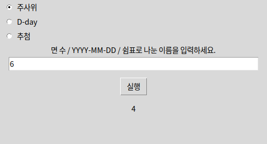

from core.logic import roll, days_left, draw화면 파일은 계산하지 않습니다. 같은 함수를 tkinter와 PySide6에서 부릅니다.
 인공지능 파이썬 실무
인공지능 파이썬 실무Ⅱ. GUI 프로그래밍 · 주제 08 / 11
1단원의 패키지에 화면을 연결하여 앱을 완성합니다.
대단원 Ⅱ. GUI 프로그래밍 교과서 40–59쪽
추가 실습 · 교과서 밖 확장
이 웹 주제의 연계 범위: 수행평가 연결쪽 + 확장
웹 학습 주제 08 / 11
1단원의 패키지에 화면을 연결하여 앱을 완성합니다.
| 산출물 | 확인할 내용 |
|---|---|
| 기능 코드 | GUI 없이도 시험 가능 |
| 실행 결과 | 정상·빈 값·경계값 비교 |
| 학습 기록 | 오류 원인과 수정 근거 |
BEFORE THE CODE
새 이름·속성이 코드에 나오기 전에 짧게 봅니다. 외우기보다 역할을 먼저 구별하세요.
from core.logic import roll, days_left, draw화면 파일은 계산하지 않습니다. 같은 함수를 tkinter와 PySide6에서 부릅니다.
core에는 tkinter·PySide6가 없습니다. 웹에서 기능을 먼저 검사한 뒤 GUI를 붙입니다.
HISTORY / VIDEO
화면과 계산을 나누는 생각은 1979년 Smalltalk의 MVC에서 분명해졌습니다. core에 기능을 두면 tkinter와 PySide6가 같은 함수를 부를 수 있습니다.
RESULT PREVIEW

같은 core.logic을 tkinter와 PySide6에서 임포트합니다. 각 GUI는 입력값을 읽어 함수에 전달하고 결과를 표시합니다. core에는 tkinter·PySide6 코드가 없으므로 웹에서도 기능을 검사할 수 있습니다.
기본 완성 조건: 위젯 배치, 버튼 이벤트, 모듈 분리, 잘못된 입력 안내입니다. 확장 과제: 추첨 인원 입력, 결과 기록, 설명 문구 개선 중 하나를 선택하세요. 두 버전 모두 실행하고 같은 입력의 의미가 유지되는지 비교합니다.
수행평가에서는 교사가 명시적으로 허용하지 않은 AI 도움 없이 스스로 작성해야 합니다. 저널에는 구현 내용, 오류, 해결 근거를 기록하고 코드와 함께 제출하세요.
한 버튼만 연결한 주사위 예제부터 시작하세요. 동작이 보이면 라디오·입력칸이 있는 생활 도우미로 옮깁니다. 빈 입력, 0면 주사위, 잘못된 날짜, 중복 이름은 기능 모듈이 예외를 내고 GUI는 메시지로 보여 줍니다.
기능 모듈 core 예제는 1단원 「1단원 프로젝트 · 우리 반 기능 패키지」 소단원에서 실습합니다.
예제마다 페이지가 따로 있습니다. 카드를 누르면 설명과 코드가 함께 열립니다.
PRACTICE / RETRY / UNDERSTAND
설명·힌트·정답과 함께 스스로 채점합니다.